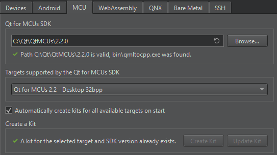
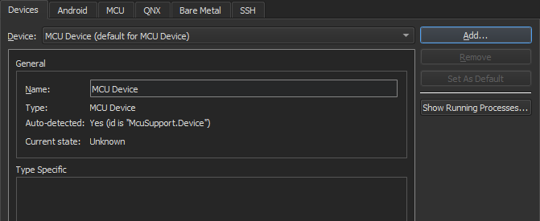
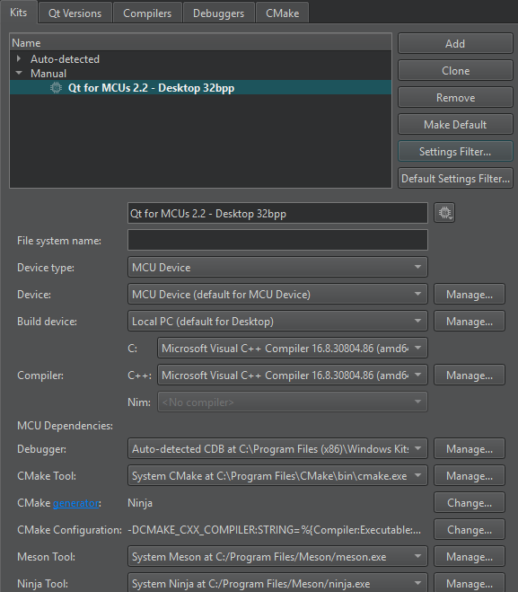

Connecting MCUs
Qt for MCUs enables you to use subsets of QML and Qt Quick Controls to create user interfaces for devices that are powered by microcontroller units (MCU). It includes a new graphics rendering engine that has a low memory footprint and is optimized for MCUs and other resource-constrained devices.
You can connect MCU boards to a development host to build applications for them using the GNU Arm Embedded GCC compiler, libraries, and other GNU tools necessary for bare metal software development on devices based on the Arm Cortex-M processors. You can deploy the applications on MCUs to run and debug them using Qt Creator.
The toolchains are available for cross-compilation on Microsoft Windows, Linux, and macOS. However, the Qt for Qt for MCUs SDK is currently only available for Windows and Linux.
For a list of Qt for MCUs reference implementations, see the Qt for MCUs documentation.
Requirements
To use Qt Creator to develop QML applications for MCUs, you need the following:
- Qt for MCUs SDK (only available for Windows and Linux)
- GNU ARM Embedded Toolchain
The hardware-specific requirements vary depending on the hardware platform you are developing for. For more information see:
Setting Up the Development Environment
You must download and install the required software and create connections between Qt Creator and MCUs. The following subsections guide you through the setup process.
MCU Plugin
To be able to develop applications for MCUs, you need the MCU plugin. This plugin is enabled automatically by Qt Online Installer when you install Qt for MCUs.
Specifying MCU Settings
To configure a connection between Qt Creator and your MCU board, select Preferences > Devices > MCU:

- In the Qt for MCUs SDK field, specify the path to the directory where you installed Qt for MCUs SDK.
- In the Targets supported by the Qt for MCUs SDK field, select your MCU board.
- In the Requirements section, ensure that the platform-specific requirements are met. This varies depending on the target chosen:
- For STM32 targets:
- The GNU ARM Embedded Toolchain or IAR ARM Compiler path.
- The STM32CubeProgrammer install path.
- The MCU SDK for the chosen target.
- The FreeRTOS Sources for the chosen target.
- For NXP targets:
- The GNU ARM Embedded Toolchain or IAR ARM Compiler path.
- The MCUXpresso IDE install path.
- The MCU SDK for the chosen target.
- The FreeRTOS Sources for the chosen target.
- For Renesas targets:
- The Green Hills Compiler path.
- The Renesas Graphics Library path.
- For STM32 targets:
- Select the Automatically create kits for all available targets on start option to create kits automatically the next time Qt Creator is started.
Note: You could also use Create Kit to manually create kits for the chosen target.
- Select Apply to save the settings.
Note: When updating to other versions of the Qt for MCUs SDK, Qt Creator will ask you if you want to replace the existing kits, or create new ones alongside. This can also be done manually, for each individual target, via Update Kit and Create Kit, respectively.
Adding MCU Devices
Note: This optional step is not necessary if you have already set up the MCU SDK as outlined in Specifying MCU Settings.
Qt Creator automatically adds a default MCU device when you select Apply in the MCU tab after configuring the MCU tool chain.

To add MCU devices, select Preferences > Devices > Add > MCU Device > Start Wizard:
- In the Name field, give the device a name.
- In the Type field, select the board type.
- Select Apply to add the device.
Managing MCU Kits
Qt Creator automatically adds kits for all the available targets, if the Automatically create kits for all available targets on start option is enabled under the MCU settings tab. You can also create kits for individual targets manually, as outlined in Specifying MCU Settings.

You can edit and/or remove individual kits in Preferences > Kits.
However, for adding new kits you should use the Create Kit button in the {Qt for MCUs} settings tab. This method adds the paths to the kit's toolkits and SDKs, and keeps them synchronized when selecting Apply or OK.
The MCU dependencies field displays paths to 3rd party software required for MCU development with the current kit.
Running Applications on MCUs
You can use a wizard to set up a project for developing an application that you can run on MCUs. The project uses a subset of QML and Qt Quick Controls that are supported by Qt for MCUs. For more information about developing applications for MCUs, see the Qt for MCUs documentation.
To create an application and run it on a MCU board:
- Select File > New Project > Application (Qt for MCUs) > MCU Support Application > Choose.
- Follow the instructions of the wizard to create the project.
- Select Projects > Build & Run, and then select the kit for building the application and running it on the MCU board specified in the kit.
- Select Run to specify run settings. Usually, you can use the default settings.
Supported Qt for MCUs SDKs
Note: The Qt for MCUs SDK 2.3 requires Qt Creator 9.0.0, or later.
The following table lists the Qt Creator versions you can use to develop applications with particular Qt for MCUs SDK versions.
| Qt Creator version | Qt for MCUs SDK version |
|---|---|
| 9.0.0 or later | 2.0 or later |
| 7.0.0 up to 8.0.2 | 2.0 up to 2.2 |
| 6.0.x | 1.3 up to 2.2 |
| 4.12.4 up to 5.0.3 | 1.3 up to 1.9 |
| 4.12.2 or 4.12.3 | 1.2 |
| 4.12.0 or 4.12.1 | 1.1 |
| 4.11.x | 1.0 |